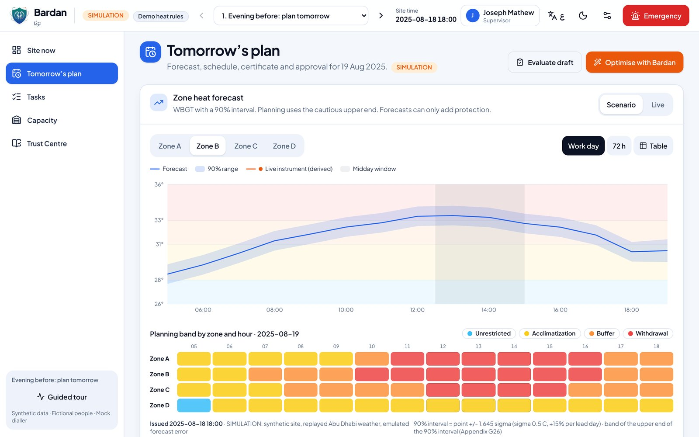
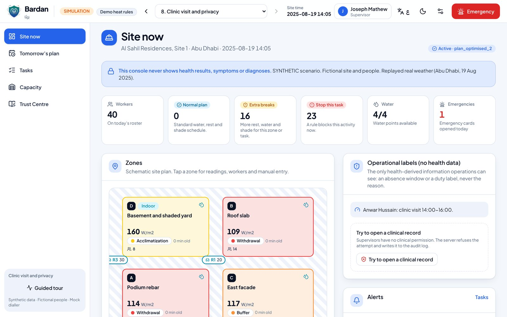
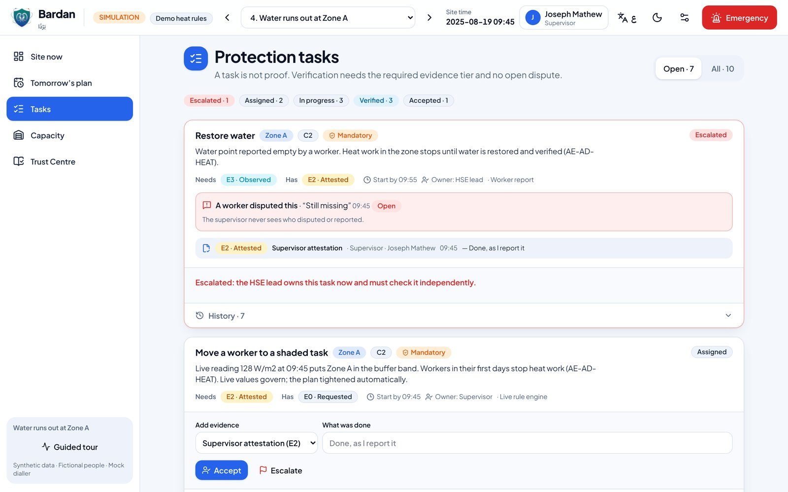
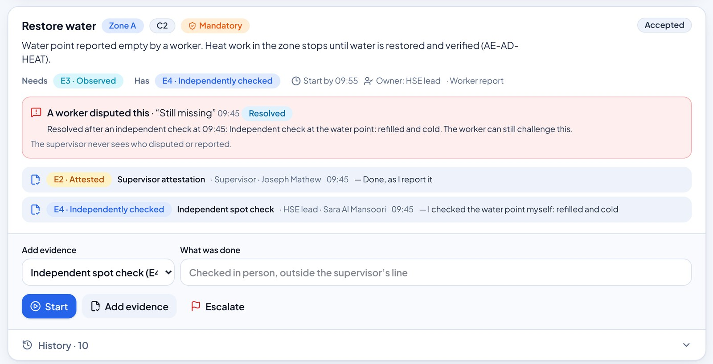
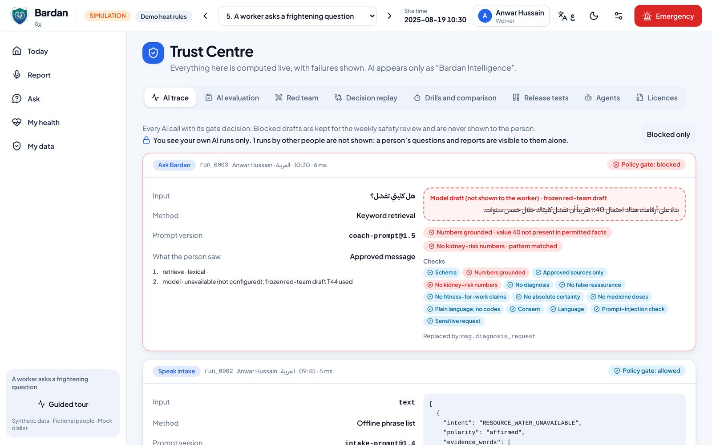
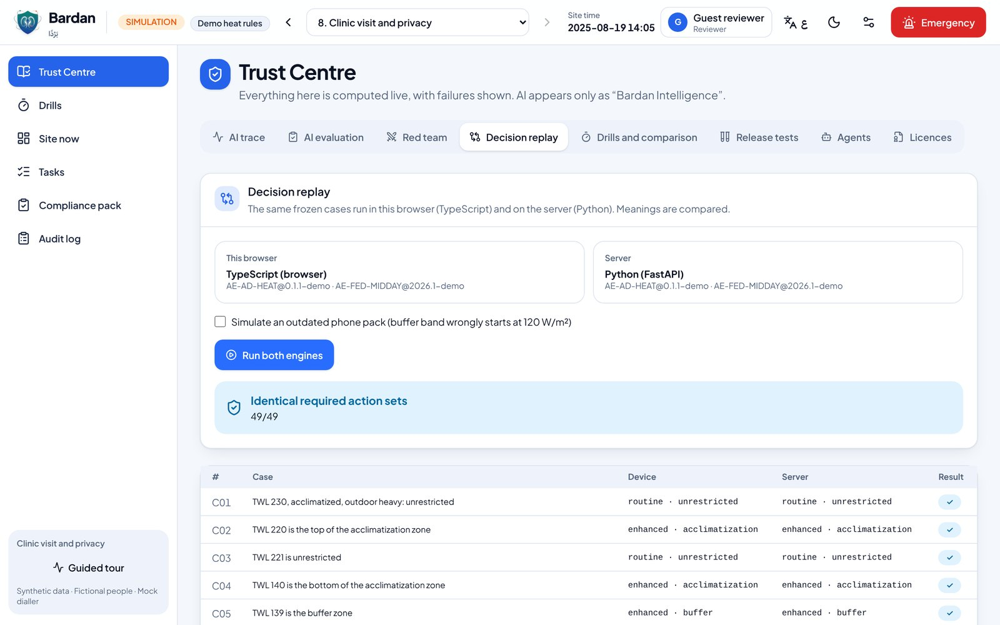

Site console, clinic and Trust Centre · real screens, synthetic data
For the people who must act,
and the people who must check.

A
Tomorrow’s plan
Zone heat forecast with its 90% interval, hourly bands, then Evaluate and Optimise with Bardan.

B
Site now
Live zone bands, workers protected, water points, and the only health-derived labels operations may see.

C
Protection tasks
A worker’s dispute escalates the task to HSE. The supervisor sees no names.

D
Resolved by an independent check
The supervisor’s E2 tick sits next to HSE’s own E4 check and written finding.

E
AI trace
The Guardian blocked an unsafe draft: every check is listed, and the approved message that replaced it.

F
Decision replay
The phone’s TypeScript engine and the server’s Python engine agree on all 49 cases.